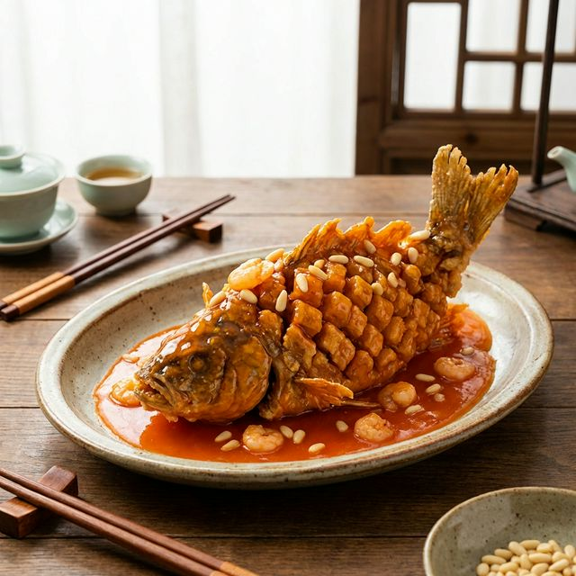

食材准备
- 主料： 鳜鱼 (桂鱼) 1条 (约750g)
- 配料： 松子、青豆 适量
- 淀粉糊： 干淀粉 适量
- 酱汁： 番茄酱 4勺, 白糖 4勺, 白醋 2勺
- 酱汁： 料酒、清汤、盐 少许
- 装饰： 虾仁 (可选) 适量
烹饪步骤
改刀出型
桂鱼去头。鱼身沿脊骨片开至尾部不切断。去除脊骨，将鱼肉面朝上，改花刀（先直切再斜切）至皮但不破。鱼头和鱼身均抹上少许盐和料酒腌制。
挂糊
将鱼身充分拍上干淀粉，确保每一条鱼肉缝隙都沾满淀粉。抖掉多余淀粉。
炸制
拎住鱼尾，入热油锅炸。炸时抖动鱼身，让鱼肉张开如松鼠毛。炸至金黄酥脆捞出码盘。鱼头也入油锅炸酥。
熬汁
锅留底油，下番茄酱炒出红味，倒入糖、醋、清汤和少许盐。煮沸后勾浓芡，淋入明油。
淋汁装盘
将滚烫的酱汁均匀浇在炸好的鱼身上。最后撒上炒香的松子和焯熟的青豆。造型优美，酸甜可口，鱼肉鲜脆。